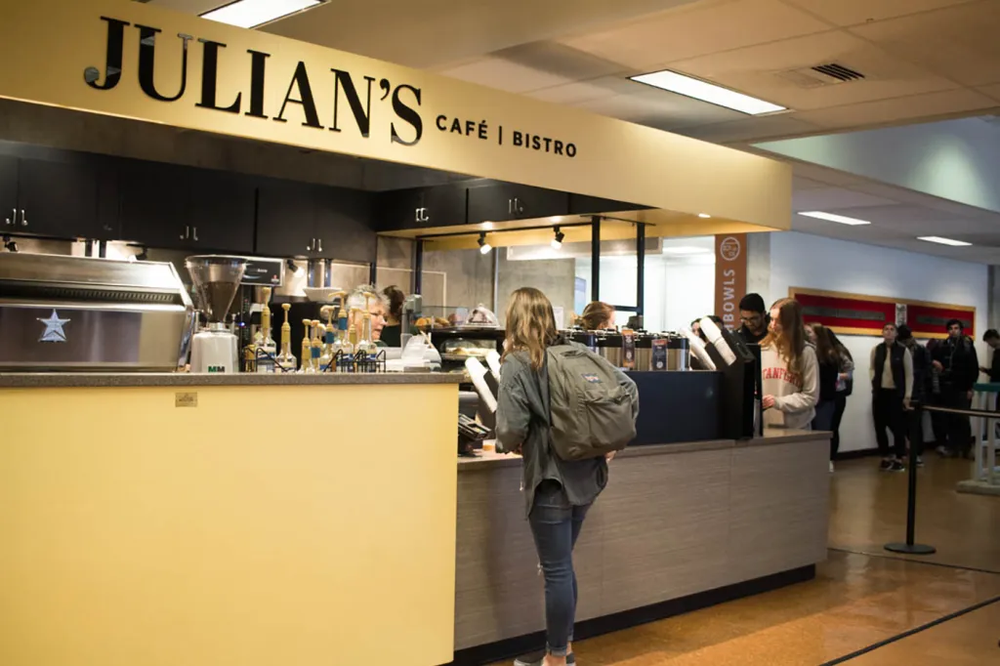

Thoughts on Julian's Cafe
It's lowkey kinda mid. But here's a longer blurb to simulate content.
I've been trying a few of their drinks, but for some reason the coffee has not been hitting like it should. Perhaps its just me, but I'd like the coffee to taste better.